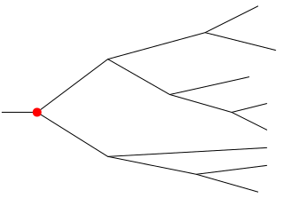
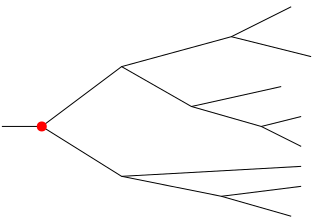
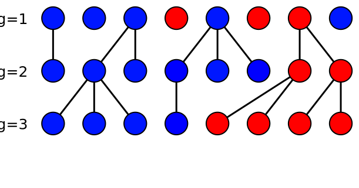
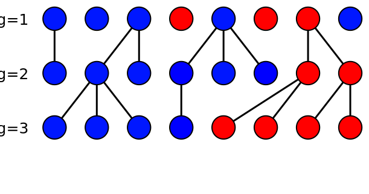
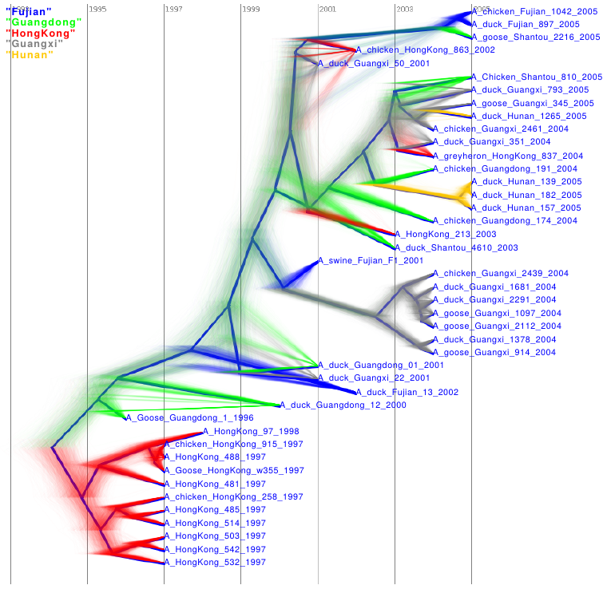
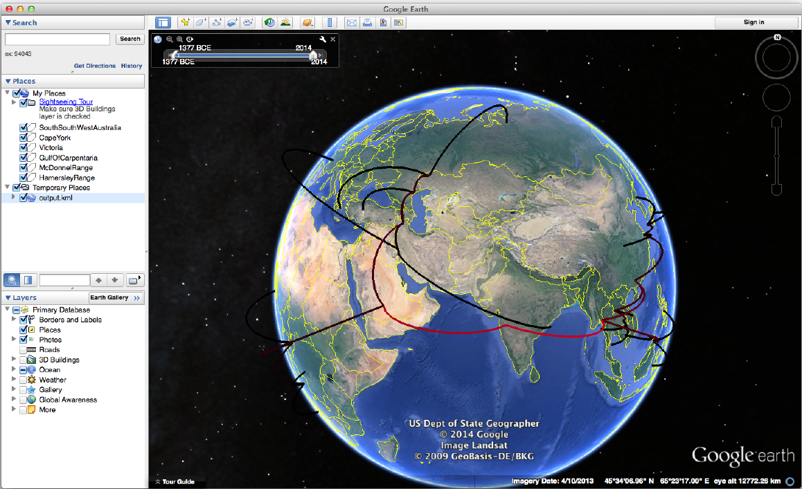
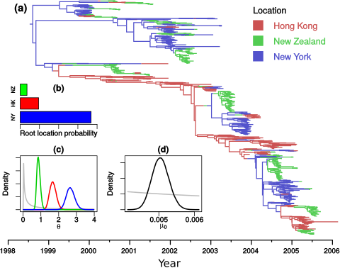

Bayesian Phylographic Inference
Centre for Computational Evolution
What is Phylogeography?
Phylogeography is a field of study concerned with the principles and processes governing the geographic distributions of genealogical lineages, especially those within and among closely related species.
Early human migrations:

Phylogeographic inference
Usual data:
Common questions:


Bayesian Phylogeographic Inference
The usual phylogenetic posterior:
$$P(T,\mu,\theta|A) = \frac{1}{P(A)} P(A|T,\mu)P(T|\theta)P(\mu)P(\theta)$$
- $P(A|T,\mu)$ is the tree likelihood
- $P(T|\theta)$ is the tree prior
- $P(\mu)$ and $P(\theta)$ are the parameter priors
Where does geography fit in?
Bayesian Phylogeographic Inference
Currently two main classes of models:
- Mugration models:
- Given tree and root location, what is the probability of sample locations?
- Exist in contiuous and discrete forms.
- Developed by Phillipe Lemey et al. (PLoS Comp Biol 2009, MBE 2010)
- Structured population models:
- given sequences and locations, what is the probability of location-coloured tree?
- Currently mostly discrete.
- Earliest examples by Hudson (1990) and Notohara (1990).
Mugration models
Discrete mugration model
 


Recap: Bayesian Phylogenetic Inference
The usual phylogenetic posterior is:
$$P(T,\mu,\theta|A,L) = \frac{1}{P(A)} P(A|T,\mu) P(T|\theta)P(\mu)P(\theta)$$
where
- $A$ is a sequence alignment,
- $T$ is the tree.
Inference: Modified tree likelihood
The standard phylogenetic posterior is modified:
\begin{align} P(T,\mu,\theta|A,L) =& \frac{1}{P(A)P(L)} P(A|T,\mu)P(L|T,M)\\ &\times P(T|\theta)P(\mu)P(\theta) \end{align}
where
- $L$ are the sampled locations, and
- $M$ is a matrix specifying the random walk.
Note the similarity between the two tree likelihood terms.
Mugration models treat location as just another trait/character.
Sampling assumption
A very important assumption made by the mugration model posterior:
Samples are assumed to be collected in a manner that is blind to their location.
- Mugration models use sample location as data.
- Just as for genetic data, non-random sampling procedures will bias results.
Equivalent population genetic model
A helpful way to visualise the mugration model is to imagine its effect on the population as a whole:

 


- Mugration => stochastically varying subpopulation sizes.
- A "neutral" model.
Continuous extensions
Use a contiunous diffusion process in place of the discrete random walk:
Essential features of mugration model remain, including sensitivity to sampling.
Structured population models
Structured Wright-Fisher Model
Imagine two sub-populations connected by weak migration:- Model as described by Notohara, 1990.
- Island populations are held constant by respective carrying capacities.
Structured Coalescent
- Backwards-in-time process that generates both the tree and ancestral locations.
- Parameterized by migration rates and (sub)population sizes.
Inference: Modified tree prior
Again, the standard phylogenetic posterior is modified:
\begin{align} P(T,\mu,\theta|A,L) &= \frac{1}{P(A)} P(A|T,\mu)\\ &\times P(T,C|\vec{N},\bar{M},L)P(\mu)P(\theta) \end{align}
where
- $L$ are the sampled locations,
- $\bar{M}$ is the migration rate matrix, and
- $C$ are the ancestral locations on the tree.
The sample locations and SC model affect the tree prior.
The shape of the tree is affected by structure.
Sampling assumption
- The coalescent tree prior is explicitly conditioned on the sample times
- Similarly, the structured coalescent tree prior is conditioned on sample locations.
The strucured coalescent makes no assumption about the manner in which samples are collected with respect to location.
- Sample distribution not used as data.
- Uneven sampling can reduce inference power, but will not bias results!
Birth-death Migration Model
- Introduced by Kühnert et al. (MBE 2016).
- A birth-death model of population dynamics in which individuals are permitted to change location due to discrete migration events.
- Migrations may be correlated with births, but not deaths.
- Sampling process explicitly modelled.
- Birth and death rates may be location-dependent: not "neutral"! (Tree shape affected by structure.)
- Inference is performed using modified tree prior.
Phylogeographic inference in BEAST 2
Discrete Phylogeography
Required packages:
- BEAST_CLASSIC
- Very well supported, BEAUti analysis setup.
- Tutorial on beast2.org/tutorials.
- Very fast, allows inference of which migrations are necessary to describe data.
- Prone to sampling biases.
Discrete Phylogeography
DensiTree output:
Continuous Spherical Phylogeography
Required packages:
- GEO_SPHERE
- Also well supported and BEAUti analysis setup.
- Tutorial on beast2.org/tutorials.
- Output can be summarized using Spread and visualized using Google Earth.
- Prone to sampling biases.
Continuous Spherical Phylogeography
Google Earth visualization example:
Structured Coalescent (Full model)
Required packages:
- MultiTypeTree
- Newer analysis option, BEAUti setup.
- Tutorial at beast2.org/tutorials.
- No built-in assumptions regarding sampling procedure.
- More computationally demanding than mugration models, only smaller numbers of demes are feasible.
Structured Coalescent (Full model)
Structured Coalescent (Approximation)
Required packages:
- BASTA
- Very new analysis option, NO BEAUti setup.
- Temporary tutorial at gihub.com/tgvaughan/MultiTypeTree/wiki.
- Approximation cuts down on the computational demands of the SC model, allowing many more locations to be considered.
- Produces very similar results to MultiTypeTree, but only samples internal node locations (not mid-edge locations).
Structured Coalescent (Approximation)
Comparisson between mugration implementation and full and approx. SC models.
Structured Coalescent (Approximation)
Posterior comparisons:
Birth-death Migration Model
Required packages:
- MASTER
- MultiTypeTree
- SA
- While capable of performing inference, BDMM has not yet been officially released.
- Information can be found on the GitHub repository: github.com/denisekuehnert/bdmm.
Birth-death Migration Model
Teaser: time and space-dependent rate parameter estimation!
Summary
- Bayesian phylogeographic methods provide a systematic way of combining geographic and genetic data.
- BEAST 2 provides two main routes:
- Mugration models
- Structured population models
- Mugration models tend to allow computationally efficient inference, but have questionable foundation and are subject to sampling biases.
- Structured population models may be more closely tied to the biology and don't necessarily depend on the samplling process.
MultiTypeTree Tutorial
- Open tutorial at github.com/tgvaughan/MultiTypeTree/wiki/Beginner's-Tutorial-(short-version).
- Start the tutorial!